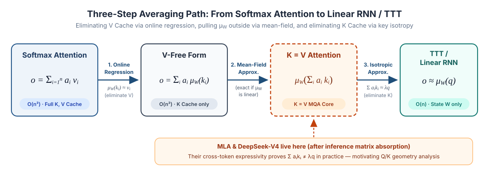
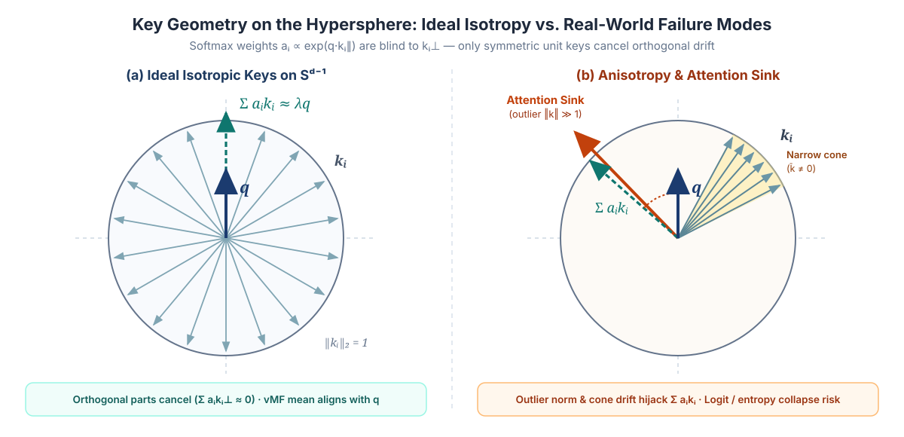
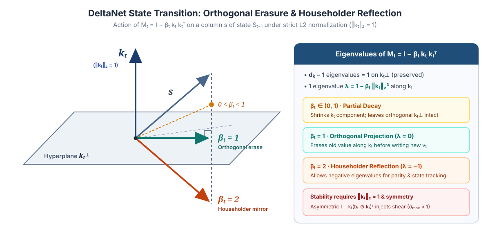

Before surveying Query–Key ($Q, K$) normalization methods across modern language models, it helps to trace the theoretical context behind them. What looks in code like a couple of lines of RMSNorm or L2 normalization connects directly to how Softmax Attention and Linear Attention differ geometrically.
From Softmax Attention to Linear RNNs
Over the past year, Jianlin Su published two derivations bridging Softmax Attention and Linear Attention / Test-Time Training (TTT).
The first post[1] rewrites standard Softmax Attention as an exact quadratic-cost recurrence and applies a first-order Taylor expansion $\alpha_{t,i} \approx \frac{1}{t}\big(1 + \boldsymbol{q}\cdot(\boldsymbol{k}_i - \bar{\boldsymbol{k}}_t)\big)$ to pull the query vector $\boldsymbol{q}$ out of the state recursion. Balancing the truncation error under a minimax criterion requires finding a query $\boldsymbol{q}^*$ that maximizes $\alpha_{t,t}(\boldsymbol{q})$—yet without norm bounds, dot products diverge and no finite maximum exists. Assuming comparable norms for $\boldsymbol{q}$ and $\boldsymbol{k}$ and setting $\boldsymbol{q}^* = \boldsymbol{k}_t - \bar{\boldsymbol{k}}_t$ leads directly to Gated DeltaNet (GDN). Even in that purely algebraic derivation, norm geometry already enters as a hidden precondition.
The companion post[2] takes a cleaner three-step averaging perspective directly from standard Softmax Attention, showing how the entire KV Cache can be peeled away layer by layer. Starting from:
$$\boldsymbol{o} = \sum_{i=1}^n a_i \boldsymbol{v}_i, \qquad a_i = \frac{e^{\boldsymbol{q}\cdot \boldsymbol{k}_i}}{\sum_{j=1}^n e^{\boldsymbol{q}\cdot \boldsymbol{k}_j}} \tag{1}$$reducing Eq. (1) to a KV-Cache-free linear RNN breaks into three conceptual steps:
- Online regression eliminates $V$ (drops the V Cache). Generalize each discrete value vector $\boldsymbol{v}_i$ into a conditional expectation $\mathbb{E}_{p(\boldsymbol{v}\mid \boldsymbol{k}_i)}[\boldsymbol{v}]$ and fit a parametric mean predictor $\boldsymbol{\mu}_{\boldsymbol{W}}(\boldsymbol{k}_i)$ online over the stream $(\boldsymbol{k}_i, \boldsymbol{v}_i)$. Substituting $\boldsymbol{\mu}_{\boldsymbol{W}}(\boldsymbol{k}_i)$ for $\boldsymbol{v}_i$ yields: $$\boldsymbol{o} = \sum_{i=1}^n a_i \boldsymbol{\mu}_{\boldsymbol{W}}(\boldsymbol{k}_i) \tag{2}$$
- Mean-field approximation pulls nonlinearity outside. Eq. (2) no longer caches $V$, yet still scans all past keys in quadratic time. Borrowing a mean-field step from statistical physics, approximate the weighted average of the function by the function of the weighted average: $$\boldsymbol{o} = \sum_{i=1}^n a_i \boldsymbol{\mu}_{\boldsymbol{W}}(\boldsymbol{k}_i) \approx \boldsymbol{\mu}_{\boldsymbol{W}}\!\left(\sum_{i=1}^n a_i \boldsymbol{k}_i\right) \tag{3}$$ Whenever $\boldsymbol{\mu}_{\boldsymbol{W}}$ is linear (such as $\boldsymbol{W}\boldsymbol{k}_i$), Eq. (3) is an exact identity rather than an approximation. Inside the parentheses sits a $K=V$ Softmax Attention core, $\sum_{i=1}^n a_i \boldsymbol{k}_i$.
- Isotropic approximation eliminates $K$ (yields a linear RNN). Because $a_i \propto e^{\boldsymbol{q}\cdot \boldsymbol{k}_i}$, if $\boldsymbol{k}_1, \dots, \boldsymbol{k}_n$ are roughly isotropic in space—more precisely, if their weighted components orthogonal to $\boldsymbol{q}$ cancel out—then: $$\sum_{i=1}^n a_i \boldsymbol{k}_i \approx \lambda \boldsymbol{q} \implies \boldsymbol{o} \approx \boldsymbol{\mu}_{\boldsymbol{W}}(\boldsymbol{q}) \tag{4}$$ Absorbing the scalar $\lambda$ into $\boldsymbol{q}$ removes the summation over past keys altogether. All historical context now lives inside the state weights $\boldsymbol{W}$, recovering standard linear-complexity RNNs such as TTT[3] (or DeltaNet when $\boldsymbol{\mu}_{\boldsymbol{W}}$ is linear and updated via one gradient step).


There is, however, an obvious counterexample to Eq. (4): in real models, $K=V$ Attention does not generally collapse to $\lambda \boldsymbol{q}$. After inference-time matrix absorption, MLA and DeepSeek-V4 (DSV4) both reduce to $K=V$ Multi-Query Attention computing $\sum_{i=1}^n a_i \boldsymbol{k}_i$. If that sum were merely proportional to $\boldsymbol{q}$, every token's output would depend only on itself and cross-token interaction would disappear.
Eq. (4) therefore does not hold automatically in trained Transformers, yet it still sets the approximation error boundary for linearization. Viewed from this angle, recent $Q, K$ normalization designs—from QK-Norm, QK-Clip, and QK-Normed MLA to nGPT and strict L2 Normalization in DeltaNet and Gated DeltaNet—illustrate how Softmax Attention and Linear Attention impose diverging geometric requirements on queries and keys.
Isotropic Assumptions vs. Empirical Geometry
To see exactly when $\sum_{i=1}^n a_i \boldsymbol{k}_i \approx \lambda \boldsymbol{q}$ holds, decompose each historical key $\boldsymbol{k}_i$ into components parallel and orthogonal to the current query $\boldsymbol{q}$:
$$\boldsymbol{k}_i = \boldsymbol{k}_i^{\parallel} + \boldsymbol{k}_i^{\perp}, \qquad \boldsymbol{k}_i^{\parallel} = \frac{\boldsymbol{q} \cdot \boldsymbol{k}_i}{\|\boldsymbol{q}\|_2^2}\,\boldsymbol{q}, \qquad \boldsymbol{q} \cdot \boldsymbol{k}_i^{\perp} = 0 \tag{5}$$Since the attention weights $a_i \propto e^{\boldsymbol{q}\cdot \boldsymbol{k}_i} = e^{\boldsymbol{q}\cdot \boldsymbol{k}_i^{\parallel}}$ depend solely on the parallel projection, Softmax is completely blind to $\boldsymbol{k}_i^{\perp}$. For Eq. (4) to hold, key geometry must satisfy two conditions:
- Directional isotropy: inside the hyperplane orthogonal to $\boldsymbol{q}$, the residual vectors $\boldsymbol{k}_i^{\perp}$ spread uniformly across directions so their weighted sum cancels, $\sum_{i=1}^n a_i \boldsymbol{k}_i^{\perp} \approx \mathbf{0}$.
- Bounded norms: no individual key carries an extreme radius outlier that dominates the weighted average on its own.
When $\boldsymbol{q}$ and all $\boldsymbol{k}_i$ lie on the unit hypersphere $\mathbb{S}^{d-1}$ ($\|\boldsymbol{q}\|_2 = \|\boldsymbol{k}_i\|_2 = 1$), the attention weights $a_i \propto e^{\tau \boldsymbol{q}^\top \boldsymbol{k}_i}$ define the classical von Mises–Fisher (vMF) distribution in directional statistics. Under a uniform base measure on $\mathbb{S}^{d-1}$, the vMF mean vector points strictly along $\boldsymbol{q}$—the clean geometric prototype behind Eq. (4).
Trained Transformers, however, rarely inhabit this clean spherical regime. Representation analyses point to two pervasive distortions:
- Anisotropy[4]: contextual representations do not fill the hypersphere evenly; instead, keys cluster inside a narrow cone with a substantial non-zero mean $\bar{\boldsymbol{k}} \neq \mathbf{0}$. Orthogonal components fail to cancel and pull the weighted sum toward the cone axis.
- Attention Sinks and Massive Activations[5][6]: because Softmax weights must sum to one, any head wishing to execute a near no-op needs a sink for surplus probability mass. Under causal masking, initial tokens such as
<bos>are visible from every subsequent position, so training drives their keys to extreme norm outliers while pushing their corresponding values near zero.


Without norm bounds, dot-product attention no longer reflects angular similarity alone and becomes easily dominated by a handful of large-norm keys. The first practical step was therefore simply to constrain query and key norms explicitly.
QK-Norm and MLA Compatibility
The initial motivation for normalizing $Q$ and $K$ was straightforward: preventing loss spikes at large scale. By Cauchy–Schwarz, pre-softmax scaled dot-product logits obey:
$$\left|\frac{\boldsymbol{q}^\top \boldsymbol{k}}{\sqrt{d_h}}\right| \le \frac{\|\boldsymbol{q}\|_2 \|\boldsymbol{k}\|_2}{\sqrt{d_h}} \tag{6}$$As pre-training progresses under high learning rates, residual-stream norms and projection weights $\boldsymbol{W}_Q, \boldsymbol{W}_K$ tend to grow steadily. Once $\|\boldsymbol{q}\|_2 \|\boldsymbol{k}\|_2$ grows large enough, attention logits expand rapidly and Softmax saturates into near one-hot distributions—a regime known as Entropy Collapse—which starves attention gradients and destabilizes training.
Activation-Level QK-Norm
The most direct fix normalizes $\boldsymbol{q}$ and $\boldsymbol{k}$ across the head dimension right before the dot product. Early work by Henry et al.[7] introduced L2-based cosine attention; ViT-22B[8] proved LayerNorm-based QK-Norm essential for stabilizing 22B vision Transformers; and recent open-weight LLMs—including Gemma 3[9], OLMo 2[10], and Qwen3[11]—have converged on per-head RMSNorm QK-Norm:
$$\hat{\boldsymbol{q}} = \frac{\boldsymbol{q}}{\sqrt{\frac{1}{d_h}\|\boldsymbol{q}\|_2^2 + \epsilon}} \odot \boldsymbol{\gamma}_q, \qquad \hat{\boldsymbol{k}} = \frac{\boldsymbol{k}}{\sqrt{\frac{1}{d_h}\|\boldsymbol{k}\|_2^2 + \epsilon}} \odot \boldsymbol{\gamma}_k \tag{7}$$Geometrically, Eq. (7) maps unconstrained Euclidean vectors onto an ellipsoid whose axis scales are controlled by the learnable vectors $\boldsymbol{\gamma}_q, \boldsymbol{\gamma}_k$, breaking the link between residual-stream norm growth and attention logit growth.
MHA, GQA, MQA, and MLA Formulations
Applying normalization directly to activations works cleanly in standard attention variants, but creates an algebraic conflict in Multi-Head Latent Attention (MLA). To make the conflict explicit—and tie back to why MLA behaves like $K=V$ attention in Section 1—let $\boldsymbol{h}_t \in \mathbb{R}^d$ denote the token-$t$ hidden state (column vector), $n_h$ the number of query heads, and $d_h$ the per-head dimension:
- MHA (Multi-Head Attention)[12]: every head $m \in \{1,\dots,n_h\}$ has its own projection matrices $\boldsymbol{W}_Q^{(m)}, \boldsymbol{W}_K^{(m)}, \boldsymbol{W}_V^{(m)} \in \mathbb{R}^{d_h \times d}$: $$\boldsymbol{q}_t^{(m)} = \boldsymbol{W}_Q^{(m)} \boldsymbol{h}_t, \qquad \boldsymbol{k}_t^{(m)} = \boldsymbol{W}_K^{(m)} \boldsymbol{h}_t, \qquad \boldsymbol{v}_t^{(m)} = \boldsymbol{W}_V^{(m)} \boldsymbol{h}_t \tag{8}$$ Every token caches $2 n_h d_h$ scalars per layer, making long-context decoding memory-bandwidth bound.
- GQA (Grouped-Query Attention) & MQA (Multi-Query Attention)[13][14]: partition the $n_h$ query heads into $n_{kv}$ groups ($1 \le n_{kv} \le n_h$, group index $g(m) = \lceil m \cdot n_{kv}/n_h \rceil$) so heads in group $g$ share key and value projections: $$\boldsymbol{q}_t^{(m)} = \boldsymbol{W}_Q^{(m)} \boldsymbol{h}_t, \qquad \boldsymbol{k}_t^{(g)} = \boldsymbol{W}_K^{(g)} \boldsymbol{h}_t, \qquad \boldsymbol{v}_t^{(g)} = \boldsymbol{W}_V^{(g)} \boldsymbol{h}_t \tag{9}$$ Setting $n_{kv}=n_h$ recovers MHA and $n_{kv}=1$ gives MQA. KV Cache drops to $2 n_{kv} d_h$ scalars per token per layer, while keys and values remain explicit per-group vectors where standard QK-Norm still drops right in.
- MLA (Multi-Head Latent Attention)[15]: instead of sharing raw KV heads, MLA compresses $\boldsymbol{h}_t$ into a single low-rank joint latent vector $\boldsymbol{c}_t^{KV} \in \mathbb{R}^{d_c}$ ($d_c \ll n_h d_h$) paired with a small shared decoupled RoPE key $\boldsymbol{k}_t^R \in \mathbb{R}^{d_R}$: $$\begin{aligned} \boldsymbol{c}_t^{KV} &= \boldsymbol{W}_{DKV} \boldsymbol{h}_t, & \boldsymbol{k}_t^{C,(m)} &= \boldsymbol{W}_{UK}^{(m)} \boldsymbol{c}_t^{KV}, & \boldsymbol{v}_t^{C,(m)} &= \boldsymbol{W}_{UV}^{(m)} \boldsymbol{c}_t^{KV} \\ \boldsymbol{k}_t^R &= \operatorname{RoPE}(\boldsymbol{W}_{KR} \boldsymbol{h}_t), & \boldsymbol{k}_t^{(m)} &= \big[\boldsymbol{k}_t^{C,(m)};\, \boldsymbol{k}_t^R\big], & \boldsymbol{q}_t^{(m)} &= \big[\boldsymbol{q}_t^{C,(m)};\, \boldsymbol{q}_t^{R,(m)}\big] \end{aligned} \tag{10}$$ During decoding, associativity absorbs $\boldsymbol{W}_{UK}^{(m)}$ into the query side and $\boldsymbol{W}_{UV}^{(m)}$ into the output projection $\boldsymbol{W}_O^{(m)}$. Only $(\boldsymbol{c}_t^{KV}, \boldsymbol{k}_t^R)$—just $d_c + d_R$ scalars per token per layer—ever enters the KV Cache, and the content branch attends directly over $\boldsymbol{c}_t^{KV}$ as both key and value (precisely the $K=V$ MQA core from Fig. 1).
| Variant | KV Cache / Token / Layer | Inference Absorption | Standard Post-Projection QK-Norm |
|---|---|---|---|
| MHA | $2 n_h d_h$ | None needed | Direct drop-in per head |
| GQA | $2 n_{kv} d_h$ | None needed | Direct drop-in per group |
| MQA | $2 d_h$ | None needed | Direct drop-in on shared key |
| MLA | $d_c + d_R$ | Absorbs $\boldsymbol{W}_{UK}^{(m)}, \boldsymbol{W}_{UV}^{(m)}$ | Breaks associativity unless factorized |
QK-Clip and QK-Normed MLA
Focus on MLA's content inner product (omitting the decoupled RoPE term and head superscript for brevity, with $\boldsymbol{k}_t^C = \boldsymbol{W}_K \boldsymbol{c}_t$). Matrix absorption relies on simple associativity:
$$\boldsymbol{q}_i^\top (\boldsymbol{W}_K \boldsymbol{c}_t) = \big(\boldsymbol{W}_K^\top \boldsymbol{q}_i\big)^\top \boldsymbol{c}_t \tag{11}$$Wrapping $\boldsymbol{k}_t^C = \boldsymbol{W}_K \boldsymbol{c}_t$ in a nonlinear QK-Norm breaks Eq. (11): computing the normalization denominator naively requires materializing every full key vector $\boldsymbol{k}_t^C$ at inference, undoing MLA's KV Cache compression. Two distinct solutions address this constraint:
- Path 1 — Move control to the optimizer: QK-Clip / MuonClip (Kimi K2)[16]. While scaling the Muon optimizer to the trillion-parameter Kimi K2 MoE model, the Kimi team observed that Muon's spectral-norm updates jointly amplified $\boldsymbol{W}_Q$ and $\boldsymbol{W}_K$, causing attention logits to grow unchecked. Instead of modifying the forward graph, QK-Clip tracks the per-head maximum attention logit $S_{\max}$ at each step; whenever $S_{\max} > \tau$, it rescales that head's projection weights directly after the optimizer step: $$\boldsymbol{W}_Q \leftarrow \sqrt{\frac{\tau}{S_{\max}}}\,\boldsymbol{W}_Q, \qquad \boldsymbol{W}_K \leftarrow \sqrt{\frac{\tau}{S_{\max}}}\,\boldsymbol{W}_K \tag{12}$$ (For MLA's decoupled RoPE branch, only the per-head query projection is scaled while the shared $\boldsymbol{W}_{KR}$ stays untouched.) Because the forward pass remains strictly linear in $\boldsymbol{c}_t$, MLA absorption stays intact and Kimi K2 completed 15.5T tokens of pre-training without loss spikes.
- Path 2 — Factorize RMSNorm for absorption: QK-Normed MLA[17]. Look closer at Eq. (7): RMSNorm is not an indivisible black box, but the product of a static feature weight $\boldsymbol{\gamma}_k$ and a dynamic scalar RMS statistic $S(\boldsymbol{k}_t^C) = \sqrt{\frac{1}{d_h}\|\boldsymbol{k}_t^C\|_2^2 + \epsilon}$. Substituting Eq. (7) into MLA's content dot product factors cleanly: $$\boldsymbol{q}_i^\top \!\left(\frac{(\boldsymbol{W}_K \boldsymbol{c}_t) \odot \boldsymbol{\gamma}_k}{S(\boldsymbol{k}_t^C)}\right) = \underbrace{\Big(\boldsymbol{W}_K^\top (\boldsymbol{q}_i \odot \boldsymbol{\gamma}_k)\Big)^\top}_{\tilde{\boldsymbol{q}}_i^\top} \boldsymbol{c}_t \cdot \underbrace{\frac{1}{S(\boldsymbol{k}_t^C)}}_{\alpha_t} \tag{13}$$ The static gain $\boldsymbol{\gamma}_k$ still folds cleanly into the absorbed query $\tilde{\boldsymbol{q}}_i$, while the dynamic part reduces from a full key vector to a single inverse-RMS scalar $\alpha_t = 1 / S(\boldsymbol{k}_t^C)$ per token and key group. Storing one extra scalar alongside $\boldsymbol{c}_t^{KV}$ adds negligible memory and under 2% latency up to 256K context, restoring mathematically exact QK RMSNorm inside MLA.
nGPT: Full-Network Hypersphere Normalization
Once QK-Norm showed that constraining query and key norms stabilizes training while supporting larger learning rates and faster convergence, a natural next question followed: what happens if every weight and hidden state in the Transformer is constrained to the unit hypersphere $\mathbb{S}^{d-1}$?
That is the step taken by NVIDIA's nGPT (Normalized Transformer)[18]. In a standard Transformer, residual updates $\boldsymbol{h} \leftarrow \boldsymbol{h} + \boldsymbol{h}_A$ add vectors freely in Euclidean space. In nGPT, input and output embeddings, every linear layer's weight matrix along the embedding axis, every hidden state $\boldsymbol{h}$, and every Attention / MLP block output $\boldsymbol{h}_A, \boldsymbol{h}_M$ are all normalized to unit norm.
On a hypersphere, moving from one unit vector to another follows the shortest path along the surface—the geodesic—given exactly by spherical linear interpolation (SLERP):
$$\operatorname{SLERP}(\boldsymbol{h}, \boldsymbol{h}_A; \alpha) = \frac{\sin((1-\alpha)\theta)}{\sin\theta}\,\boldsymbol{h} + \frac{\sin(\alpha\theta)}{\sin\theta}\,\boldsymbol{h}_A, \qquad \theta = \arccos(\boldsymbol{h}^\top \boldsymbol{h}_A) \tag{14}$$For training efficiency, nGPT approximates geodesic transport with first-order linear interpolation (LERP) followed by spherical retraction back onto $\mathbb{S}^{d-1}$:
$$\boldsymbol{h} \leftarrow \operatorname{Norm}\!\Big(\boldsymbol{h} + \boldsymbol{\alpha}_A \odot (\boldsymbol{h}_A - \boldsymbol{h})\Big), \qquad \boldsymbol{h} \leftarrow \operatorname{Norm}\!\Big(\boldsymbol{h} + \boldsymbol{\alpha}_M \odot (\boldsymbol{h}_M - \boldsymbol{h})\Big) \tag{15}$$Here $\boldsymbol{\alpha}_A, \boldsymbol{\alpha}_M \in \mathbb{R}_{\ge 0}^d$ are learnable per-channel step sizes (termed eigen learning rates) controlling how far the hidden state moves along the sphere toward $\boldsymbol{h}_A$ or $\boldsymbol{h}_M$.

nGPT's faster convergence (reported as 4–20× fewer training steps depending on sequence length) reflects a clean optimization geometry:
- Eliminating implicit angular learning-rate decay: in unconstrained Euclidean space, as a parameter vector's norm $\|\boldsymbol{\theta}\|_2$ grows under Adam, the same step size rotates the vector by a progressively smaller angle $\Delta\theta \propto \|\Delta\boldsymbol{\theta}\|_2 / \|\boldsymbol{\theta}\|_2$.
- Decoupling semantic direction from temperature: locking every vector on $\mathbb{S}^{d-1}$ bounds dot products $\boldsymbol{q}^\top \boldsymbol{k} \in [-1, 1]$. Rather than dividing by $\sqrt{d_h}$ to control variance, attention scores are multiplied by a learnable scale around $\sqrt{d_h}$ to restore sharpness, and both weight decay and learning-rate warmup can be removed.
From QK-Norm to nGPT, the Softmax progression shares a single motivation: remove redundant radial degrees of freedom so optimizer updates act primarily on semantic directions.
L2 Norm and Householder Stability in Linear Attention
Now return to the endpoint of Section 1: Linear Attention and modern RNNs. In Softmax Attention, normalizing $Q$ and $K$ serves mainly to stabilize training; in modern linear attention architectures—DeltaNet, Gated DeltaNet (GDN), and Kimi Delta Attention (KDA)—strict L2 normalization of keys ($\|\boldsymbol{k}_t\|_2 = 1$) is a necessary condition for stable recurrence.
Eigenstructure of Delta Updates
Early linear attention[19] accumulated key–value outer products purely additively, $\boldsymbol{S}_t = \boldsymbol{S}_{t-1} + \boldsymbol{k}_t \boldsymbol{v}_t^\top$, so stale associations written into the fixed-size state matrix $\boldsymbol{S}_t \in \mathbb{R}^{d_k \times d_v}$ could never be overwritten and interfered over long contexts. To enable selective overwriting in fixed-size memory, DeltaNet[20][21] introduced online error-correcting updates via the Delta Rule:
$$\boldsymbol{S}_t = \boldsymbol{S}_{t-1} + \beta_t \boldsymbol{k}_t \Big(\boldsymbol{v}_t^\top - \boldsymbol{k}_t^\top \boldsymbol{S}_{t-1}\Big) = \big(\boldsymbol{I} - \beta_t \boldsymbol{k}_t \boldsymbol{k}_t^\top\big) \boldsymbol{S}_{t-1} + \beta_t \boldsymbol{k}_t \boldsymbol{v}_t^\top \tag{16}$$Gated DeltaNet[22] and Kimi Delta Attention (KDA)[23] further compose the delta update with a forget-gate decay matrix $\boldsymbol{D}_t$ (scalar $d_t \boldsymbol{I}$ in GDN, fine-grained diagonal $\operatorname{Diag}(\boldsymbol{d}_t)$ in KDA):
$$\boldsymbol{S}_t = \big(\boldsymbol{I} - \beta_t \boldsymbol{k}_t \boldsymbol{k}_t^\top\big) \boldsymbol{D}_t \boldsymbol{S}_{t-1} + \beta_t \boldsymbol{k}_t \boldsymbol{v}_t^\top \tag{17}$$Inspect the eigenstructure of the core transition operator $\boldsymbol{M}_t = \boldsymbol{I} - \beta_t \boldsymbol{k}_t \boldsymbol{k}_t^\top$ by decomposing any vector $\boldsymbol{u} \in \mathbb{R}^{d_k}$ along $\boldsymbol{k}_t$ and its orthogonal complement $\boldsymbol{k}_t^\perp$:
$$\boldsymbol{M}_t \boldsymbol{k}_t = \big(1 - \beta_t \|\boldsymbol{k}_t\|_2^2\big)\,\boldsymbol{k}_t, \qquad \boldsymbol{M}_t \boldsymbol{u} = \boldsymbol{u} \quad (\forall\, \boldsymbol{u} \perp \boldsymbol{k}_t) \tag{18}$$Thus $\boldsymbol{M}_t$ has $d_k - 1$ eigenvalues identically equal to $1$ on $\boldsymbol{k}_t^\perp$, and a single non-trivial eigenvalue $\lambda = 1 - \beta_t \|\boldsymbol{k}_t\|_2^2$ along $\boldsymbol{k}_t$. Preventing exponential growth across long recurrent products $\prod_t \boldsymbol{M}_t$ requires keeping the spectral radius $|\lambda| \le 1$, which leads directly to $\|\boldsymbol{k}_t\|_2 = 1$. Once keys are unit-normalized, the gate $\beta_t \in [0, 2]$ maps onto three clear geometric regimes:
- $\beta_t \in (0, 1)$ (partial decay): attenuates existing memory along $\boldsymbol{k}_t$ while leaving the orthogonal subspace $\boldsymbol{k}_t^\perp$ untouched.
- $\beta_t = 1$ (orthogonal projection, $\lambda = 0$): $\boldsymbol{M}_t = \boldsymbol{I} - \boldsymbol{k}_t \boldsymbol{k}_t^\top$ zeroes out the component along $\boldsymbol{k}_t$ before writing $\boldsymbol{v}_t$.
- $\beta_t = 2$ (Householder reflection, $\lambda = -1$): $\boldsymbol{M}_t = \boldsymbol{I} - 2\boldsymbol{k}_t \boldsymbol{k}_t^\top$ mirrors the state vector across the hyperplane $\boldsymbol{k}_t^\perp$, introducing negative eigenvalues that strengthen state-tracking and parity expressivity.


Non-Normal Shear and State Capacity
Even with $\|\boldsymbol{k}_t\|_2 = 1$ enforced, breaking the symmetric orthogonal structure of $\boldsymbol{I} - \beta_t \boldsymbol{k}_t \boldsymbol{k}_t^\top$ can still cause long-context divergence. Gated DeltaNet-2 (GDN-2)[24] generalized the scalar erasure gate $\beta_t$ into a channel-wise vector gate $\boldsymbol{b}_t \in (0, 1)^{d_k}$, turning the erase operator into $\boldsymbol{I} - \boldsymbol{k}_t (\boldsymbol{b}_t \odot \boldsymbol{k}_t)^\top$.
A subsequent stability analysis in Stable GDN-2[25] traced GDN-2's long-context overflow to non-normality: because the readout direction $\boldsymbol{b}_t \odot \boldsymbol{k}_t$ and the write-back erase direction $\boldsymbol{k}_t$ are no longer collinear, the operator injects a non-orthogonal shear component. Even when every single eigenvalue stays bounded inside $[-1, 1]$, a non-normal shear matrix can have largest singular value $\sigma_{\max} > 1$—so orthogonal components leak gain back onto $\boldsymbol{k}_t$, causing recurrent state norms to grow exponentially even with zero new writes. Restoring symmetric erasure eliminates this shear and recovers non-expansive state propagation.
Beyond operator stability, key geometry directly sets the state capacity ceiling of linear attention. Readout computes $\boldsymbol{o}_t = \boldsymbol{S}_t^\top \boldsymbol{q}_t$: if historical keys $\boldsymbol{k}_1, \dots, \boldsymbol{k}_t$ cluster into a narrow cone, pairwise overlaps $\boldsymbol{k}_i^\top \boldsymbol{k}_j$ stay large, and erasing one key interferes with neighboring associations. Only when keys spread isotropically—approaching pairwise orthogonality on $\mathbb{S}^{d_k - 1}$—can a fixed $d_k \times d_v$ state matrix fully utilize its $d_k$ storage dimensions.
Softmax vs. Linear: Divergent Geometric Goals
Putting all five normalization families side by side summarizes the progression:
| Stage | Representative Work | Where Applied | Core Geometric Operation | Primary Problem Solved |
|---|---|---|---|---|
| Activation | QK-Norm (ViT-22B, Gemma 3, Qwen3) | $Q, K$ activations | Head-wise RMSNorm / L2 Norm | Caps dot-product magnitude; prevents logit growth and entropy collapse |
| Optimizer | QK-Clip (Kimi K2 / MuonClip) | Weights $\boldsymbol{W}_Q, \boldsymbol{W}_K$ | Rescale by $\sqrt{\tau / S_{\max}}$ | Bounds logits without breaking MLA inference absorption |
| Factorized | QK-Normed MLA | Latent space + scalar cache | Absorb static $\boldsymbol{\gamma}_k$ + cache $1/S(\boldsymbol{k}_t^C)$ | Restores exact QK RMSNorm inside MLA at minimal cache cost |
| Full manifold | nGPT | All weights & hidden states | Pin to $\mathbb{S}^{d-1}$ + LERP/Norm retraction | Decouples direction and scale; removes implicit angular LR decay |
| Operator spectrum | DeltaNet, Gated DeltaNet, KDA | Linear-attention key $\boldsymbol{k}_t$ | Strict L2 Norm ($\|\boldsymbol{k}_t\|_2 = 1$) | Keeps $\boldsymbol{I} - \beta_t \boldsymbol{k}_t \boldsymbol{k}_t^\top$ a generalized Householder operator for stability and capacity |
We can now return to the question left open in Section 1: for the isotropic approximation $\sum_{i=1}^n a_i \boldsymbol{k}_i \approx \lambda \boldsymbol{q}$, do we actually want it to hold or not?
The answer highlights the divergent geometric objectives of Softmax Attention and Linear Attention:
- Linear Attention and DeltaNet favor global isotropy. Because a linear RNN compresses history into a fixed-size state matrix $\boldsymbol{S}_t$, unit keys act like orthogonal address hashes. The more uniformly and orthogonally keys cover $\mathbb{S}^{d_k - 1}$, the better conditioned the generalized Householder transitions become, the lower the cross-talk between stored values, and the longer the effective memory horizon.
- Softmax Attention—especially $K=V$ designs like MLA and DSV4—cannot collapse to a uniform, unstructured sphere. Rewrite the key average explicitly as a query-aligned term plus its deviation: $$\sum_{i=1}^n a_i \boldsymbol{k}_i = \lambda \boldsymbol{q} + \underbrace{\left(\sum_{i=1}^n a_i \boldsymbol{k}_i - \lambda \boldsymbol{q}\right)}_{\text{semantic interaction residual}} \tag{19}$$ In a $K=V$ architecture, if keys behaved like isotropic white noise on the sphere, the residual term would vanish and cross-token information transfer would disappear. Contextual reasoning lives inside that residual—formed when semantically related keys cluster locally off the $\boldsymbol{q}$ axis. Softmax normalization (QK-Norm, QK-Clip, and nGPT) therefore strikes a trade-off: suppress norm drift, global narrow-cone collapse, and extreme sink outliers while preserving local semantic clustering on the hypersphere.
Stepping back, the progression from basic RMSNorm to MLA absorption, nGPT spherical updates, DeltaNet's Householder spectrum, and the interaction residual in $K=V$ attention all centers on the same two questions: how to decouple vector magnitude from direction, and how each attention family trades off global isotropy against local semantic clustering.
Citation
If you reference these notes or diagrams, please cite:
Chaoran Feng (2026). "The Geometry of QK Normalization: From Softmax Stability to Hyperspheres and Linear Attention". Chaoran Feng's Blog. https://www.falcary.com/blogs/qk-norm-geometry/
@article{feng2026qknorm,
title = {The Geometry of QK Normalization: From Softmax Stability to Hyperspheres and Linear Attention},
author = {Feng, Chaoran},
year = {2026},
month = {November},
url = {https://www.falcary.com/blogs/qk-norm-geometry/}
}References
- Linearizing Softmax Attention into Gated DeltaNet (将Softmax Attention线性化为Gated DeltaNet). Jianlin Su, Scientific Spaces, July 2026.
- The Path of Averaging: From Attention to TTT (平均之路：从Attention到TTT). Jianlin Su, Scientific Spaces, November 2026.
- Learning to (Learn at Test Time): RNNs with Expressive Hidden States. Sun, Li, Dalal, Xu, Vikram, Zhang, Dubois, Chen, Wang, Koyejo, Hashimoto, and Guestrin, ICML 2025 (arXiv:2407.04620).
- How Contextual are Contextualized Word Representations? Comparing the Geometry of BERT, ELMo, and GPT-2 Embeddings. Ethayarajh, EMNLP 2019 (arXiv:1909.00512).
- Efficient Streaming Language Models with Attention Sinks. Xiao, Tian, Chen, Han, and Lewis, ICLR 2024 (arXiv:2309.17453).
- Massive Activations in Large Language Models. Sun, Chen, Kolter, and Liu, COLM 2024 (arXiv:2402.17762).
- Query-Key Normalization for Transformers. Henry, Dachapally, Pawar, and Chen, Findings of EMNLP 2020 (arXiv:2010.04245).
- Scaling Vision Transformers to 22 Billion Parameters. Dehghani et al., Google Research, ICML 2023 (arXiv:2302.05442).
- Gemma 3 Technical Report. Gemma Team, Google DeepMind, 2025 (arXiv:2503.19786).
- 2 OLMo 2 Furious. OLMo Team, Allen Institute for AI, 2024 (arXiv:2501.00656).
- Qwen3 Technical Report. Qwen Team, Alibaba, 2025 (arXiv:2505.09388).
- Attention Is All You Need. Vaswani et al., NeurIPS 2017 (arXiv:1706.03762).
- Fast Transformer Decoding: One Write-Head is All You Need. Shazeer, Google, 2019 (arXiv:1911.02150).
- GQA: Training Generalized Multi-Query Transformer Models from Multi-Head Checkpoints. Ainslie et al., Google Research, EMNLP 2023 (arXiv:2305.13245).
- DeepSeek-V2: A Strong, Economical, and Efficient Mixture-of-Experts Language Model. DeepSeek-AI, 2024 (arXiv:2405.04434).
- Kimi K2: Open Agentic Intelligence. Kimi Team, Moonshot AI, 2025 (arXiv:2507.20534).
- QK-Normed MLA: QK Normalization Without Full Key Caching. Han, Zhao, Zhou, Li, and Sun, 2026 (arXiv:2606.16310).
- nGPT: Normalized Transformer with Representation Learning on the Hypersphere. Loshchilov, Hsieh, Sun, and Ginsburg, NVIDIA, ICLR 2025 (arXiv:2410.01131).
- Transformers are RNNs: Fast Autoregressive Transformers with Linear Attention. Katharopoulos, Vyas, Pappas, and Fleuret, ICML 2020 (arXiv:2006.16236).
- Linear Transformers Are Secretly Fast Weight Programmers. Schlag, Irie, and Schmidhuber, ICML 2021 (arXiv:2102.11174).
- Parallelizing Linear Transformers with the Delta Rule over Sequence Length. Yang, Wang, Zhang, Shen, and Kim, NeurIPS 2024 (arXiv:2406.06484).
- Gated Delta Networks: Improving Mamba2 with Delta Rule. Yang, Kautz, and Hatamizadeh, ICLR 2025 (arXiv:2412.06464).
- Kimi Linear: An Expressive, Efficient Attention Architecture. Kimi Team, Moonshot AI, 2025 (arXiv:2510.26692).
- Gated DeltaNet-2: Decoupling Erase and Write in Linear Attention. Hatamizadeh, Choi, and Kautz, 2026 (arXiv:2605.22791).
- Stable Gated DeltaNet-2: Understanding and Mitigating Recurrent State Instability. Zhang, Hao, Liu, Zhou, Zhang, Liu, Su, and Li, 2026 (arXiv:2611.34051).